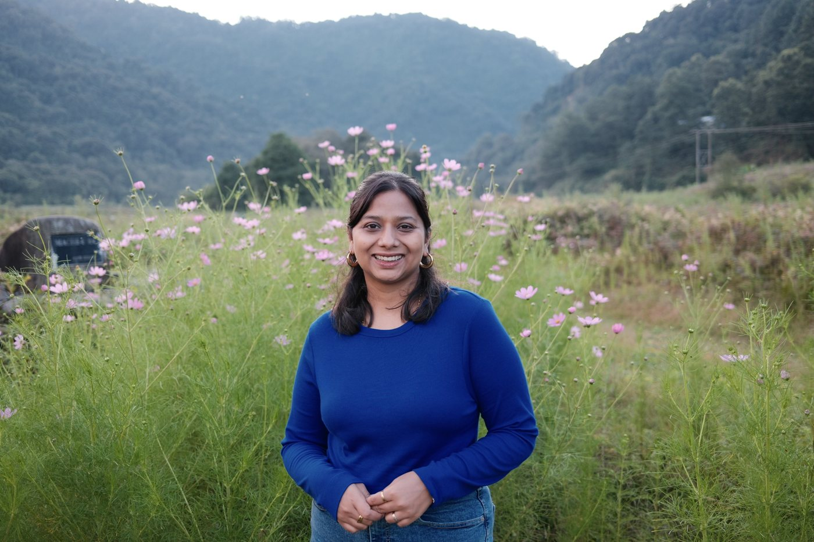

Sanchita Srivastava, Senior UX Designer
Senior Product Designer with 10+ years of experience leading 0-to-1 initiatives and enterprise SaaS modernizations. Skilled at turning complex data, AI systems, and regulated workflows into intuitive, high-trust user journeys.
I combine deep UX research practices with an AI-augmented design workflow to speed up discovery, build scalable systems, and bridge business strategy with technical delivery.

My journey
-
2026/01 – Present
Founding Designer
FoundersBrew · Part-time
- Led 0-to-1 discovery and product strategy by interviewing 9+ founders to challenge core assumptions, pivoting the product direction from a motivation tracker to a clarity-focused platform based on qualitative research
- Designed the end-to-end experience for a voice-based research agent, mapping conversational flows and interaction patterns that translate dynamic voice inputs into structured, actionable insights across entry points.
- Built the initial design system, brand identity, and interactive prototypes from scratch, using an AI-augmented design workflows to rapidly test and iterate concepts with 8+ founders.
-
2025/07 – Present
Freelance Consultant
Remote · Part-time
- Provided UI and visual design services for high-performance computing and rendering farm operations, focused on creating intuitive interfaces for complex technical workflows. Simplified user flows and delivered UI designs for 7+ workflows.
- Delivered Brand DNA concept and refreshed visual identity for a mental health organisation.
-
2019/04 – 2025/04
Sr. Designer
HCL Softwares, BigFix · Bengaluru, India
- Partnered with product leadership during BigFix’s transition from on-premise to SaaS, delivered framework for onboarding and notification systems within 6 months of being onboarded on the SaaS venture, which was used across 8+ SaaS product modules.
- Designed and streamlined end to end process flows for the enterprise compliance portfolio, delivering an improved operational efficiency by ~20% across 3+ major releases in a heavily constrained environment, tailored for our client.
- Delivered 12+ end to end workflows across 4 verticals (Compliance, Self Service Application, Server Automations and SaaS) within BigFix
- Laid the ground work for BigFix Digital Employee Experience (DeX), which went on to become an AI-powered workspace management platform.
- Mentored and coached 5 junior designers, establishing research frameworks, prototyping standards, and collaborative handoff processes.
-
2016/09 – 2019/03
UX/UI Lead | UX Developer
10k info Inc · Bengaluru, India
- Managed a team of 2 designers and 1 UI developer.
- Designed end-to-end experiences for 3 enterprise applications.
- Digitised manual workflows, reducing manual work by ~24% and minimising ambiguity.
- Collaborated with PMs, developers, and QA teams for smooth design hand-offs.
- Prototyped individual components and features impacting larger company applications.
-
2016/04 – 2016/08
Web Designer
Graphycurry · Bengaluru, India
- Responsible for UI design and development of 4+ E-commerce platforms.
- Designed promotional banners and flyers for social media using various design tools with attention to details.
-
2014/07 – 2016/02
Web Developer & Designer
Cedcoss Technologies · Lucknow, India
- Defined concepts and scripts for video development.
- Designed and developed front-end for 20+ projects in E-commerce, Health care, Real estate, Ngo.
- Mentored junior designers and new hires.
-
2010/08 – 2014/06
Bachelors of Technology, IT
Dr. APJ Abdul Kalam Technical University · Lucknow, India
Skills
Research
- User Research
- User interview
- Usability testing
- Card sorting
- Post-research analysis / Thematic Analysis
- Personas, Disability personas
- Accessibility and Inclusive design
- Discount Usability
Design
- User-flows & Journey Mapping
- Information Architecture, Sitemaps
- Wire-framing & High-Fidelity prototyping
- User Interface / Visual Design
- Prototyping (Figma, HTML+CSS)
- Experience design strategy
- Storytelling & Stakeholder Communication
Tools
- Figma / Figma MCP + Claude
- Miro/Figjam/Mural
- Jira
- Notion/ Notion MCP + Claude for notes
- Base44 (low-code app building)
- UX Pilot
Certificates
- Enterprise Design Thinking PractitionerIBM Corporation
- Human Computer InteractionThe Interaction Design Foundation
- Design for AccessibilityThe Interaction Design Foundation
Interests
Reading, Writing, Painting, Moodboarding, Surface Design & Illustration